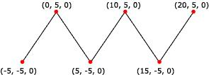

A line strip is a primitive that is composed of connected line segments. Your application can use line strips for creating polygons that are not closed. A closed polygon is a polygon whose last vertex is connected to its first vertex by a line segment. If your application makes polygons based on line strips, the vertices are not guaranteed to be coplanar. The following illustration depicts a rendered line strip.
